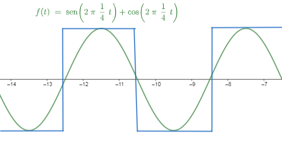

Digital Signal Processing
The field of Digital Signal Processing (DSP) has evolved into an essential discipline across communications, medicine, imaging, music, and more. This course provides the theoretical and practical foundations of DSP, including Fourier analysis, sampling, quantization, digital filter design, and modern applications. Students will develop competencies in mathematical tools and software used to analyze and process digital signals, applying this knowledge in real-world environments.
Learning Objectives
- Develop skills for implementing digital signal processing algorithms.
- Understand signal transformations and apply them in various contexts.
- Model discrete-time systems.
- Apply convolution processes in linear and time-invariant systems.
- Become familiar with practical DSP applications in current technologies.
- Execute laboratory and practical assignments with technical proficiency.
Course Outline
-
Topic 1: Introduction and DSP Fundamentals
- Definitions and foundations
- Basic DSP concepts
- Mathematical fundamentals
- Discrete Fourier Transform (DFT)
- Short-Time Fourier Transform
- Discrete Fourier Series
- Sinusoidal modulation
- Signal sampling
- Interpolation
- Signal quantization
- Reconstruction of continuous signals
- Linear filters
- Stability and frequency response
- Ideal and realizable filters
- Design and application of digital filters
- Vector space concepts
- Bases and subspaces
- Applications in discrete signals
- Advanced time-series analysis
- Digital processing and spectrogram analysis
- Advanced transforms
Topic 2: Fourier Analysis
Topic 3: Sampling and Quantization
Topic 4: Digital Filters
Topic 5: Vector Spaces Applied to DSP
Topic 6: DSP Applications

Leveraging artificial intelligence tools accelerated by GPUs greatly enhances the learning experience in this Digital Signal Processing course. Students can run real-time Fourier analyses, experiment with dynamic spectrograms, simulate sampling and quantization effects interactively, and design digital filters that update instantly with GPU-powered computation. AI models can classify and denoise complex signals, generate synthetic datasets for laboratory work, and provide intelligent tutoring that identifies conceptual misunderstandings in topics such as DFT, STFT, convolution, and stability. Through GPU-enabled environments on campus, learners gain hands-on experience with industry-level computational workflows, making DSP concepts more intuitive, practical, and directly applicable to modern technologies.
Instructor
Dr. Edgar Salazar
Head of Electromechanical Engineering Department
Research Professor